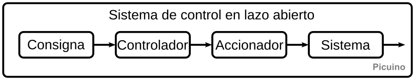
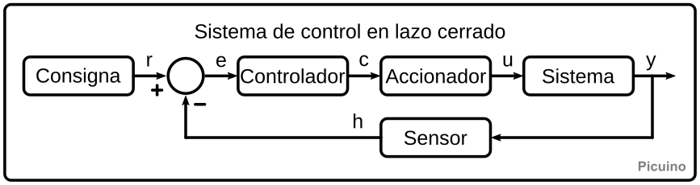
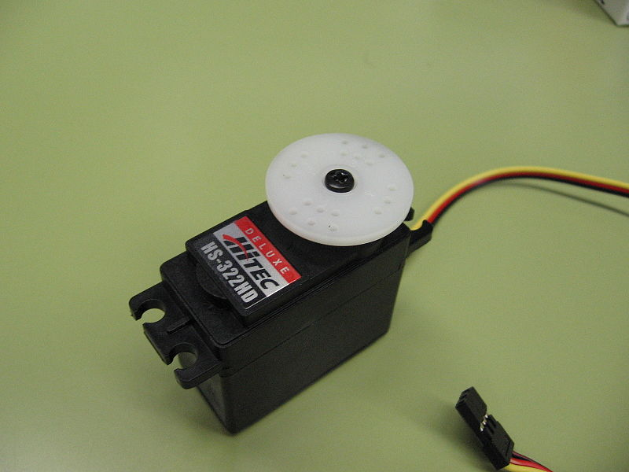

Automatic control¶
Controllers or automatic regulators are part of many of the devices that surround us, although we are not aware of it.
We can find examples of controllers in the heating or air conditioning thermostat, in the oven or refrigerator temperature control, in the light level regulator, in the power steering of automobiles, the stop system in a elevator floors or even in the water filling system of the toilet cistern. Where a speed, movement, temperature, pressure or level are kept regulated, there is a controller that does this job.
To refer to this type of system, the name of automatic controllers or automatic regulators is used.
On this page we will review the different components of an automatic control system and the different types of control that exist, open loop and closed loop.
Elements of an open loop control system¶
The following image shows a diagram of the simplest control system, open loop control.
{kind=link}
Four blocks can be recognized in this scheme:
- Locker
It is the part of the system that describes what we want to get from the controller.
For example, a setpoint can be a manual control in which we select a 2-minute operating time in a microwave. Another example would be the control with which we select the heating power that we want to obtain in a ceramic hob when cooking.
- Controller
It is in charge of receiving a setpoint signal or reference signal and converting it into a signal that allows the system to reach the desired reference.
An example of a controller is a timer that turns the microwave oven on and off every few seconds to control its power.
- Actuator
It is in charge of converting the control signal, which has little power, into an action on the system, with greater power.
Returning to the example of the electric oven, the actuator will be the heating resistor and the power system that turns it on. In the case of a servomechanism, the actuator will be the set of transistors and the motor that move the mechanism.
- System
Also sometimes called a plant, it is what you want to control.
In an oven, the system will be the oven box in which you want to control the temperature. In the case of a servomechanism, the system will be the motor and the gearbox whose position is to be controlled.
Sometimes the setpoint, the controller or the actuator do not have well-defined limits or do not exist in any system. In any case, it is interesting to know these elements when identifying the different parts of a control system.
Examples of open loop control systems¶
We can find examples of open-loop control systems in multiple devices in our environment.
- Power control of a microwave oven
The setpoint is the rotary control with which we select the ignition time.
The controller consists of a timer that turns the oven on and turns it off at the end of the set time.
The actuator is a magnetron that produces the microwaves that heat the milk.
The system will be, for example, the glass of milk that is heated inside the oven.
- Power control of an electric air heater
The setpoint is the knob that we turn to achieve half power or full power.
The controller is the switch that selects between one or two heating resistors.
The actuator is made up of the heating resistors and the fan.
The system is the room heated by the hot air from the heater.
- Control of light intensity
The setpoint is the potentiometer or variable resistor that is turned to get more or less light.
The controller is an electronic circuit that decides how long the lamp will be on several times per second.
The driver is an electronic power circuit and the lamp that produces light.
The system is the room with more or less lighting.
- Sound level control in audio equipment
The setpoint is the potentiometer that moves to achieve a higher or lower sound level.
The actuator is the amplifier and speakers of the stereo.
The system is the room and the sound level that is achieved.
One of the most common open-loop controllers is the timer. This can be found in multiple devices such as timed switching on of building staircase lights, automatic switching off of escalators, microwave oven timer, etc.
In open-loop systems, it is possible to control whether the system receives more or less power from the actuator, but it is not possible to control exactly the point at which the controlled system will be found.
In the case of the microwave oven, for example, we cannot be sure of the temperature that the milk will reach inside. Neither with the electric air heater can we know exactly the temperature that the room will reach. In both cases, the final result will depend on the size of the glass or the room, the ambient temperature, the insulation, the total power of the heater, etc.
This disadvantage of open-loop systems does not prevent them from being used frequently due to their great simplicity and because they are very robust.
Elements of a closed-loop control system¶
The following image shows a schematic of a closed-loop control system.
{kind=link}
This type of control system solves the problem of open-loop systems, which depend on the actuator, environmental conditions, etc. The closed loop name comes from the sensor signal that returns to the controller, closing the control loop. The elements of the closed-loop control system are the same as the elements of the open-loop control system with two additions:
- Sensor
The sensor measures the state or variable to be controlled in the system (position, temperature, humidity, etc.). This allows knowing the state of the system and correcting deviations so that the desired state can be achieved.
For example, in a refrigerator, the temperature sensor detects the inside temperature to turn off the motor when it is too cold and start the motor if the temperature gets too high.
- Comparator
This element is represented by a circle in the schematic. Its function is to compare the reference signal r that comes from the reference and the feedback signal h that comes from the sensor and calculate the error e that exists between the desired response and the real state of the system.
From this error it is possible to get the system to the desired state, which is the one dictated by the instructions.
This type of control will ensure that the system is in the desired state regardless of environmental conditions.
The control system signals are as follows:
| Sign | Name | Function |
|---|---|---|
| r | Reference | It is the state that you want to reach in the system. |
| and | Mistake | It is the difference between the desired state and the actual state of the system to be controlled. |
| c | Control | It is the signal generated by the controller. |
| or | Drive | It is the action that is exerted on the system to control it. |
| and | Exit | It is the actual state that the system to be controlled has reached. |
| h | Feedback | It is the measure of the state of the system. |
Examples of closed-loop control systems¶
As in the case of open-loop controllers, there are also many everyday devices that have closed-loop control systems. These are characterized by having a sensor that allows to measure the state of the system and control it with precision.
Temperature control of a refrigerator.
Temperature control in an electric oven.
Water filling control of a cistern of the toilet.
Power steering of a car or truck.
Position control of a servomechanism.
Start and stop system on each floor of an elevator.
Opening control of an automatic door, which opens in response to the presence of someone.
{kind=link}
References¶
Wikipedia: Control system
Wikipedia: Servomotor
[1] Ogata, Katsuhiko. Modern Control Engineering. Third edition. Prentice Hall Publisher.
[2] Ogata, Katsuhiko. Control systems in discrete time. Second edition. Prentice Hall Publisher.